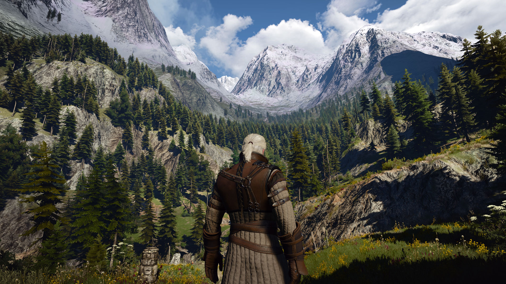
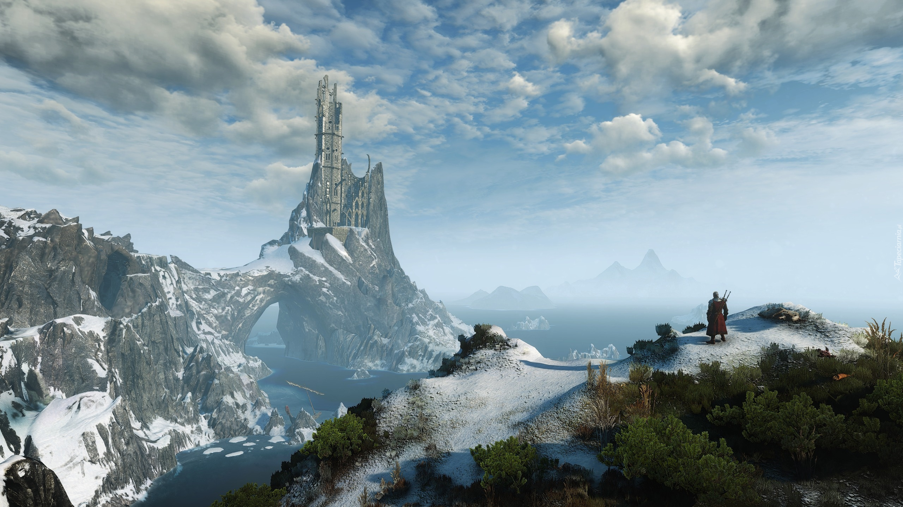
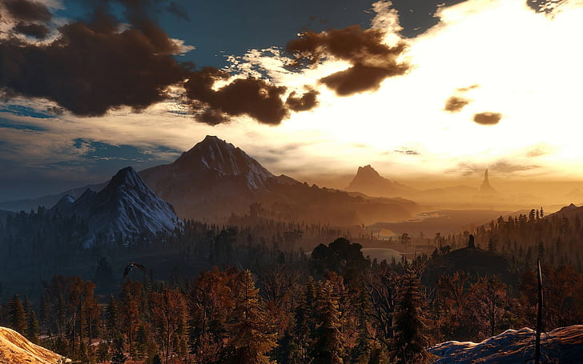
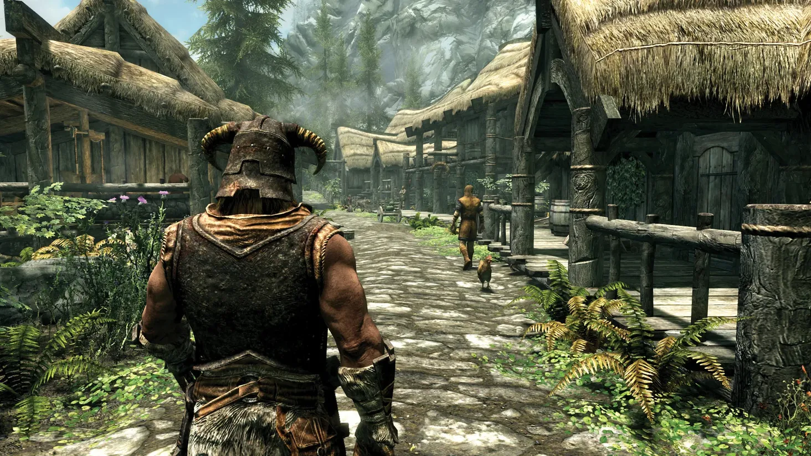
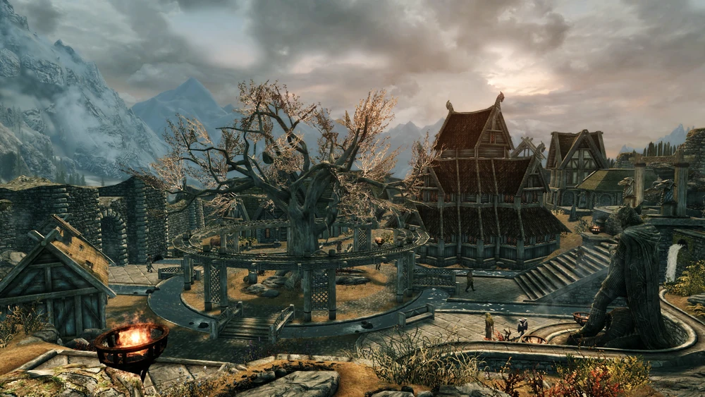
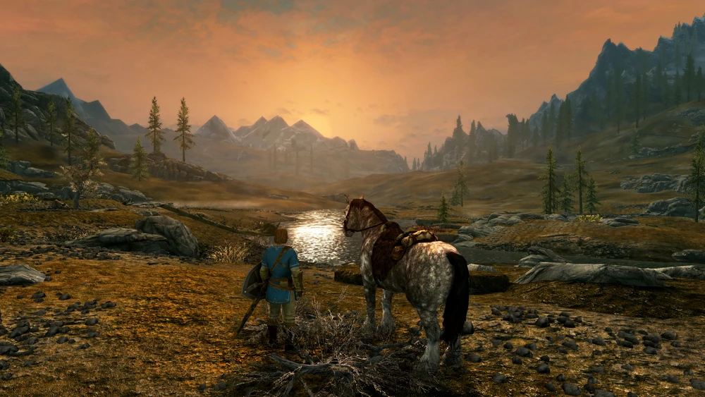
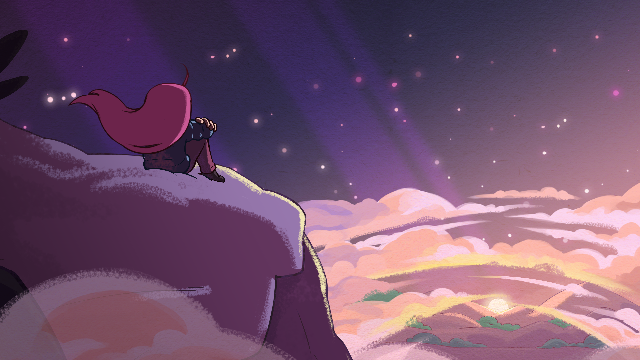
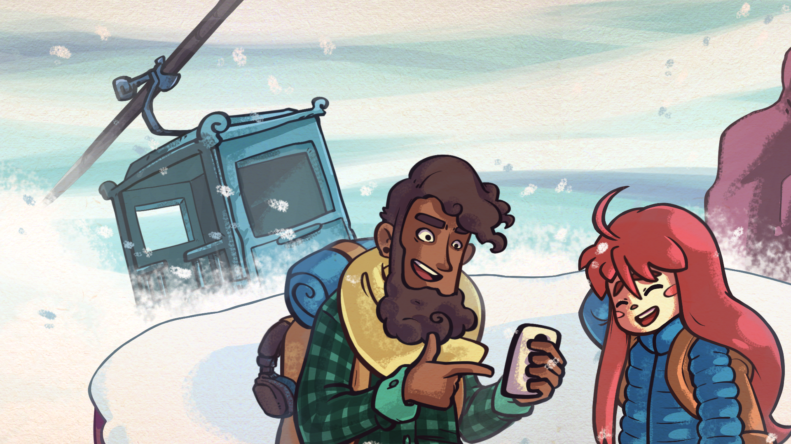
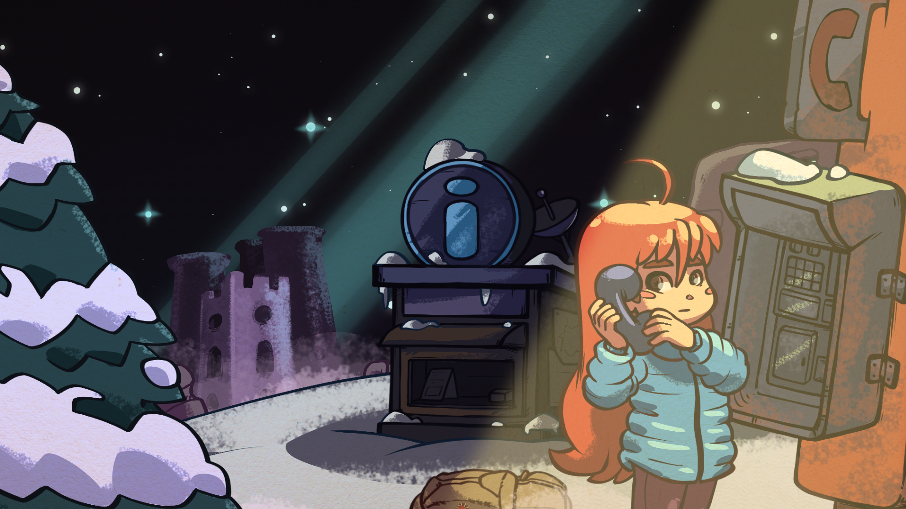

Wiedźmin 3: Dziki Gon

Na trzecią część erpegowej sagi o wiedźminie czekałem długo, ale teraz już wiem, że było warto. Nie dlatego, że wreszcie otrzymaliśmy otwarty świat. Nie dlatego, że potrafi on zauroczyć i wciągnąć. Nawet nie dlatego, że Geralt wreszcie porzucił politykę. Przede wszystkim dlatego, że otrzymałem zbiór opowieści, które niejeden raz poruszyły mnie na poziomie emocjonalnym. A ta sztuka w świecie gier udała się niewielu.

Wiedźmin 3: Dziki Gon to nie tylko gra – to doświadczenie, które każdy miłośnik RPG powinien przejść. To opowieść o rodzinie, miłości, stracie i odkupieniu. To świat, w którym łatwo się zagubić i w którym zawsze znajdziemy coś nowego do odkrycia.

Jestem pod ogromnym wrażeniem jej rozmiarów oraz rozmachu. Ciągle emocjonuję się fabułą i nie mogę oderwać od eksploracji wszystkich zakamarków zaprojektowanego świata. CD Projekt Red pokazał BioWare i innym konkurentom jak powinny wyglądać nowoczesne, rozbudowane gry cRPG oraz jak się robi misje poboczne. A przecież na tym nie koniec, bo twórcy obiecali dalszy rozwój i darmowe DLC, które będą czymś więcej niż tylko skórkami i przedmiotami. Wiedźmin 3 zjada konkurencję przemyślanym i niebanalnym systemem walki oraz fenomenalnym udźwiękowieniem. Jestem pochłonięty w całości.
The Elder Scrolls V: Skyrim

„Werdykt „The Elder Scrolls V: Skyrim” nie jest łatwą grą do oceny. Z jednej strony ma widoczne wady, jednak przy ogromie zalet nie są one dyskwalifikujące. To angażująca produkcja, która wciąga i nie daje o sobie zapomnieć. Jedna z tych gier, o których myślimy przed snem, zastanawiając się, co jutro będziemy w niej robić. Poleciłbym każdemu, kto szuka gry rozbudowanej, bez jednej słusznej ścieżki; piaskownicy, w której spędzi sporo godzin na robieniu tego, co sobie akurat wymyślił. Obok „Dark Souls” jest to mocny kandydat do mojej gry roku, przy której spędzę pewnie resztę zimy.”

„Jednak patrząc obiektywnie na The Elder Scrolls V: Skyrim, łatwo jest stwierdzić, że z pewnością nie jest to gra idealna. Przynajmniej do kilku rzeczy, można się przyczepić. Wielu zapewne jako wadę, wytknie choćby znacząco uproszczony system rozwoju postaci czy też wspomniane już błędy. Oceniając jednak ten tytuł pod kątem grywalności i tego w jakim stopniu dajemy się pochłonąć wirtualnej rzeczywistości, bez wahania można wystawić tej grze maksymalną ocenę. Bez wątpienia, pewne jest jedno, obok The Elder Scrolls V: Skyrim nie da się przejść obojętnie, bez względu na to czy jest się fanem gier RPG czy nie.”

„Skyrim to z pewnością jedna z najlepszych gier RPG, w jakie grałem. Ogrom i różnorodność świata w niej przedstawionego zachwyca, rozwój postaci jest dobrze obmyślany, walki sporo lepsze niż w poprzednich częściach, Mimo wielu plusów gra ma też swoje wady, np. zbytnią konsolowość, średnią fabułę, błędy i to, że przy najnowszych produkcjach graficznie wypada średnio.”
Celeste

Celeste to wspaniała platformówka. Z pozoru proste mechaniki łączy w pięknie zgraną całość. Wszystko ma tu sens i pasuje do pozostałych elementów, a pomysłowość projektantów nie pozwala się nudzić. Jeżeli lubicie trudne, dwuwymiarowe gry ze skakaniem w roli głównej - nie możecie tego przegapić.

Świetnie się bawiłem w Celeste i z przyjemnością odkrywałem jej sekrety, wśród których znajdzie, chociażby pierwowzór gry, stworzony w trakcie game-jamu. Bardzo mocno polecam grę Extremely OK Games. Nawet jeśli nie przepadacie z wyzwaniem lub nie leży wam gatunek. Twórcy umieścili w grze opcje Assist Mode, dzięki którym możecie zmodyfikować rozgrywkę pod wasze upodobania. Choć wszystkiego zmienić się nie da, to bez konsekwencji na pucharkach, czy wydarzeniach w historii, możecie dostosować wyzwanie ku waszemu upodobaniu. Design na tym nie straci. Historia również. Grafika, czy muzyka nie utracą ani grama uroku. A wy zyskacie niebagatelne wspomnienia.

Główna fabuła zajmie wam od pięciu do ośmiu godzin w zależności od tego, jak często będziecie mieli ochotę na zbaczanie z głównej ścieżki w poszukiwaniu znajdziek. Po zobaczeniu napisów końcowych i znalezieniu specjalnej kasety w każdym z poziomów będziecie mogli podjąć się piekielnie trudnych „wersji-B” poziomów, odblokowany zostaje dodatkowy ósmy rozdział, następnie rozdział dziewiąty dodany po premierze, potem niedorzecznie trudne „wersje-C”… w skrócie, jeśli planujecie zebrać wszystko, zarezerwujcie dla Celeste co najmniej kilkadziesiąt godzin. A zarezerwować je warto, bo to nie tylko świetnie zaprojektowana i wymagająca platformówka, ale też przeurocza opowieść o radzeniu sobie z depresją, z którą utożsamić może się jednak prawie każdy. Wszyscy bowiem mają swoje Celeste.